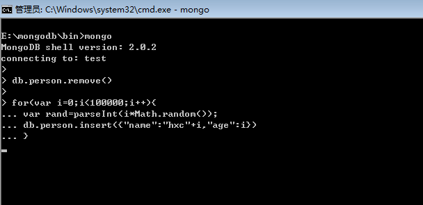
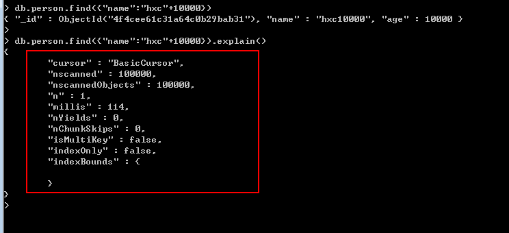
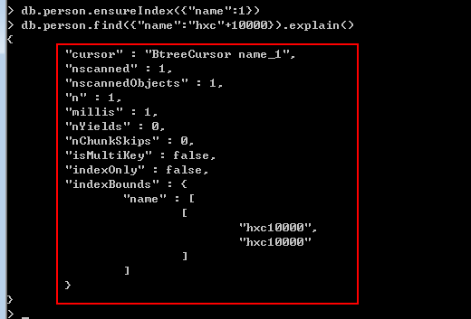
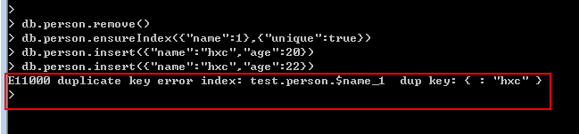
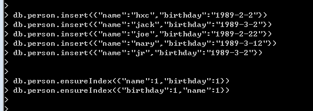
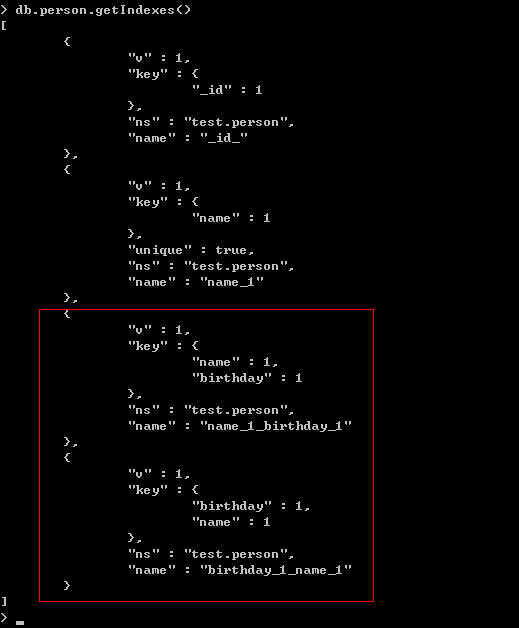
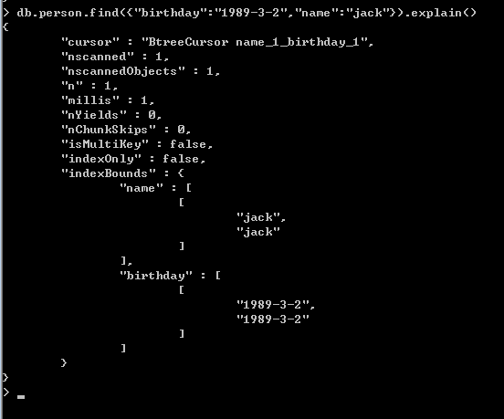
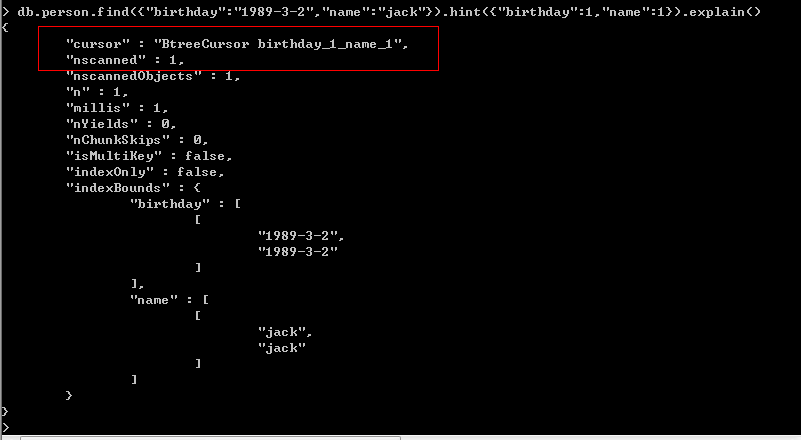
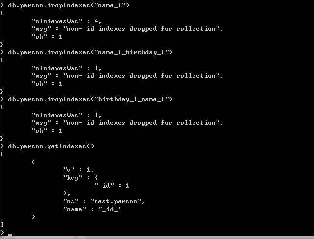

这些天项目改版，时间比较紧，博客也就没跟得上，还望大家见谅。
好，今天分享下mongodb中关于索引的基本操作，我们日常做开发都避免不了要对程序进行性能优化，而程序的操作无非就是CURD，通常我们
又会花费50%的时间在R上面，因为Read操作对用户来说是非常敏感的，处理不好就会被人唾弃，呵呵。
从算法上来说有5种经典的查找，具体的可以参见我的算法速成系列，这其中就包括我们今天所说的“索引查找”，如果大家对sqlserver比较了解
的话，相信索引查找能给我们带来什么样的性能提升吧。
我们首先插入10w数据，上图说话：

一：性能分析函数（explain）
好了，数据已经插入成功，既然我们要做分析，肯定要有分析的工具，幸好mongodb中给我们提供了一个关键字叫做“explain"，那么怎么用呢？
还是看图，注意，这里的name字段没有建立任何索引，这里我就查询一个“name10000”的姓名。

仔细看红色区域，有几个我们关心的key。
cursor: 这里出现的是”BasicCursor",什么意思呢，就是说这里的查找采用的是“表扫描”，也就是顺序查找，很悲催啊。
nscanned: 这里是10w，也就是说数据库浏览了10w个文档，很恐怖吧，这样玩的话让人受不了啊。
n: 这里是1，也就是最终返回了1个文档。
millis: 这个就是我们最最最....关心的东西，总共耗时114毫秒。
二：建立索引（ensureIndex）
在10w条这么简单的集合中查找一个文档要114毫秒有一点点让人不能接收，好，那么我们该如何优化呢？mongodb中给
我们带来了索引查找，看看能不能让我们的查询一飞冲天.....

这里我们使用了ensureIndex在name上建立了索引。”1“：表示按照name进行升序，”-1“：表示按照name进行降序。
我的神啊，再来看看这些敏感信息。
cursor: 这里出现的是”BtreeCursor"，这么牛X，mongodb采用B树的结构来存放索引，索引名为后面的“name_1"。
nscanned: 我擦，数据库只浏览了一个文档就OK了。
n: 直接定位返回。
millis: 看看这个时间真的不敢相信，秒秒杀。
通过这个例子相信大家对索引也有了感官方面的认识了吧。
三：唯一索引
和sqlserver一样都可以建立唯一索引，重复的键值自然就不能插入，在mongodb中的使用方法是：
db.person.ensureIndex({"name":1},{"unique":true})。

四：组合索引
有时候我们的查询不是单条件的，可能是多条件，比如查找出生在‘1989-3-2’名字叫‘jack’的同学，那么我们可以建立“姓名”和"生日“
的联合索引来加速查询。

看到上图，大家或者也知道name跟birthday的不同，建立的索引也不同，升序和降序的顺序不同都会产生不同的索引，
那么我们可以用getindexes来查看下person集合中到底生成了那些索引。

此时我们肯定很好奇，到底查询优化器会使用哪个查询作为操作，呵呵，还是看看效果图：

看完上图我们要相信查询优化器，它给我们做出的选择往往是最优的，因为我们做查询时，查询优化器会使用我们建立的这些索引来创建查询方案，
如果某一个先执行完则其他查询方案被close掉，这种方案会被mongodb保存起来，当然如果非要用自己指定的查询方案，这也是
可以的，在mongodb中给我们提供了hint方法让我们可以暴力执行。

五： 删除索引
可能随着业务需求的变化，原先建立的索引可能没有存在的必要了，可能有的人想说没必要就没必要呗，但是请记住，索引会降低CUD这三
种操作的性能，因为这玩意需要实时维护，所以啥问题都要综合考虑一下，这里就把刚才建立的索引清空掉来演示一下:dropIndexes的使用。
